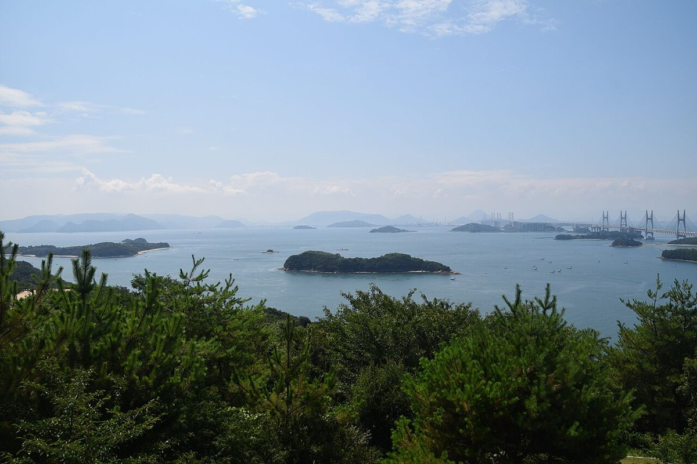
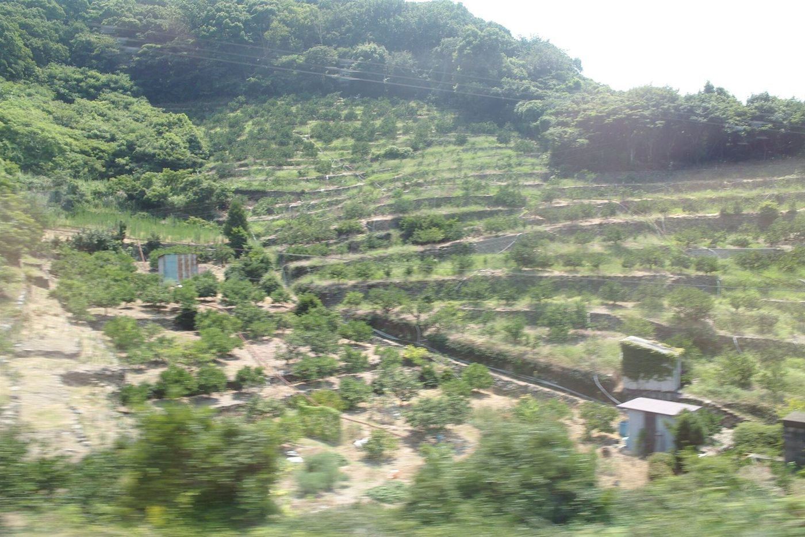

Cafe in Suo-Oshima, Yamaguchi
大師堂喫茶室
山口県周防大島町・小松にある喫茶店「大師堂喫茶室」のご案内ページです。住所の表記は「妙善寺内」で、お寺の敷地内にあります。営業時間やお品書きなど詳しいことは準備中。まずはInstagramをのぞいてみてください。

Association / 制作側の連想
潮待ちの、ひと休み。
お店の名前の由来や、お店の考えは分かりません。ここからは制作側の連想です。瀬戸内の島の港には、潮の向きが変わるのを待つ「潮待ち」という言葉があります。島の喫茶店と聞いて、急がずにひと息つく場所、という場面を思い浮かべました。このページの波形の模様は、その連想から作っています。
一
島のみかん畑を想う
周防大島は柑橘のイメージがある島です。ここに載せている写真は、他の地域の柑橘畑のイメージ写真です。

二
窓辺の一杯を想う
窓から海の気配がする席で、カップを手に本をひらく。そんな時間を想像して選んだ、撮影地不明のイメージです。

三
夕方の港を想う
日が傾くころの静かな港。国外で撮影された写真ですが、島の夕方を連想して並べました。
Information
ご案内
| 所在地 | 〒742-2106 山口県大島郡周防大島町小松873 妙善寺内 |
|---|---|
| 電話 | なし |
| 営業時間 | 準備中 |
| 定休日 | 準備中 |
| ご予約 | 準備中 |
| 駐車場 | 準備中 |
| SNS | Instagram @daishido_cafe |